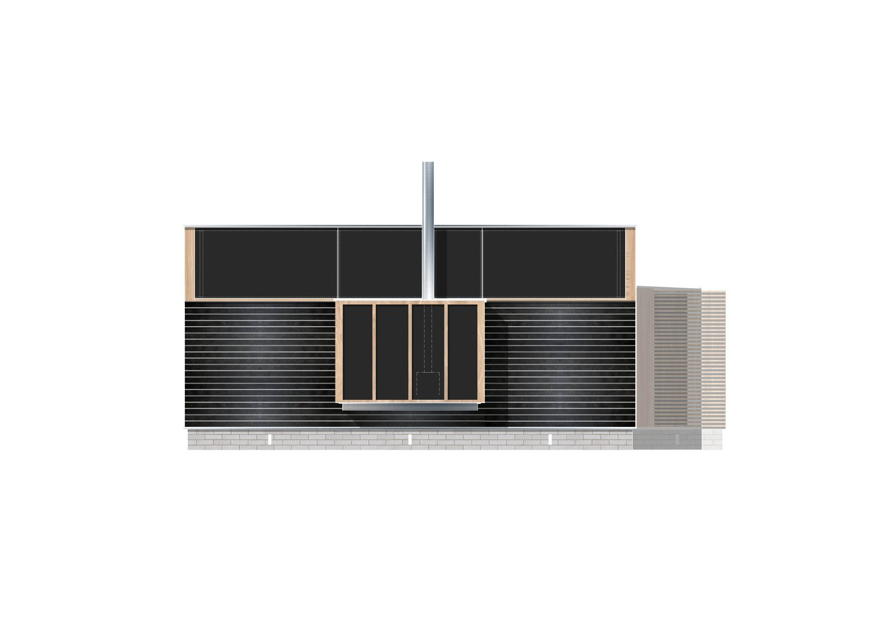
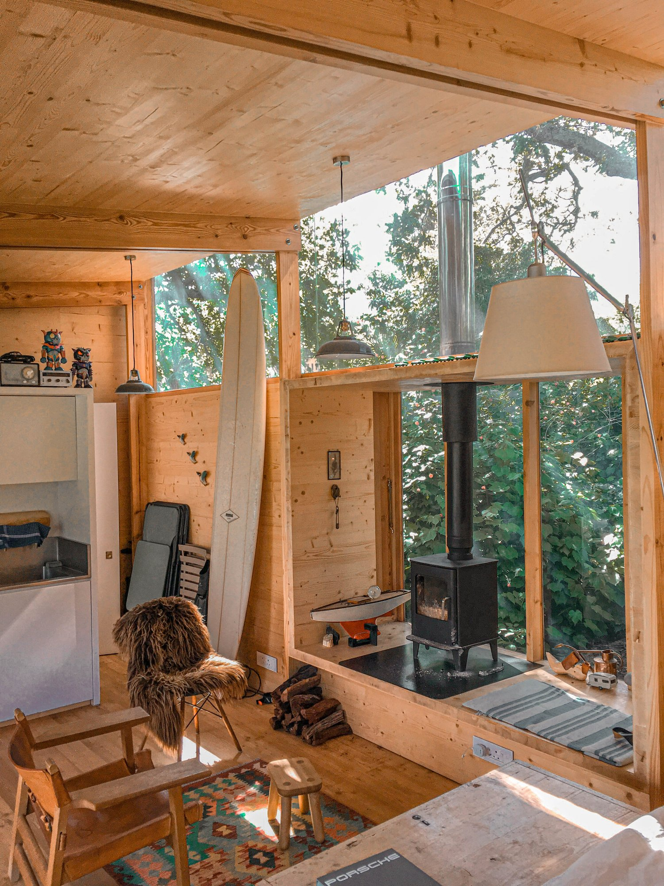
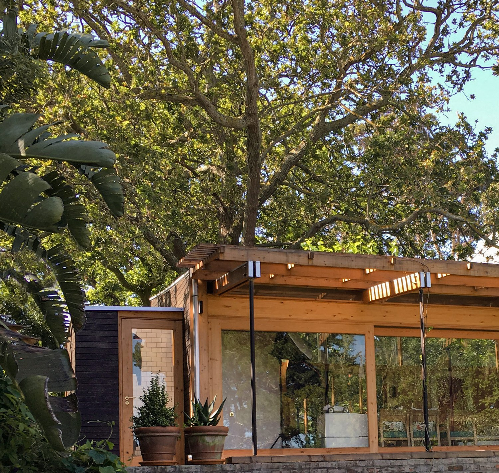
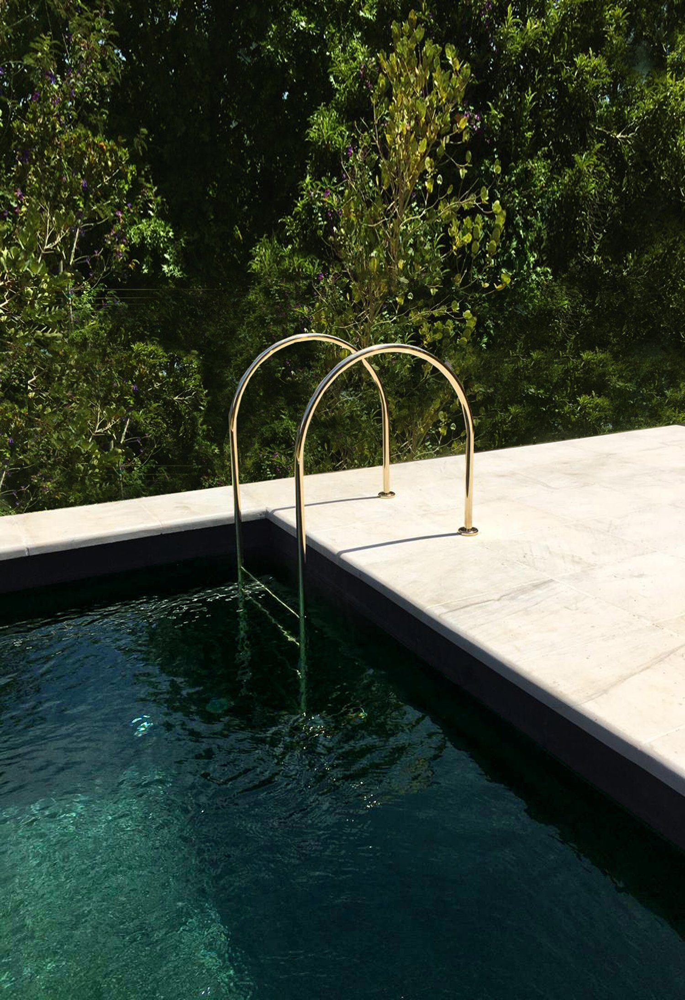

Constantia Cabin
This 30 square meter project is a guest cabin and owner’s retreat. Perched at the top of it’s plot, the cabin nestles it’s back into a small forest and looks out onto views of Constantiaberg. The efficient plan fits a bedroom, kitchen, shower and bathroom into its small building footprint. Glass openings pull the outside in with large sections on the North and South facades. The living space opens towards a timber deck which becomes a flowing indoor/outdoor area which dapples sunlight through its pergola, creating a perfect outdoor area to enjoy the breeze and warmth from the sun.
Sophisticated detailing show off the project’s materiality of timber and glass. Internal tectonics use cross laminated timber to create a unified space where furniture and spatial elements merge into one coherent piece. Externally,charred Larch timber gives the facade a dark texture-emphasizing the natural character of the material and relating it to its forests surrounds. Glass boxes pop out of the cabin to include parts of the building’s programme and to wash the space in natural light and the site’s forest’s shadow.




